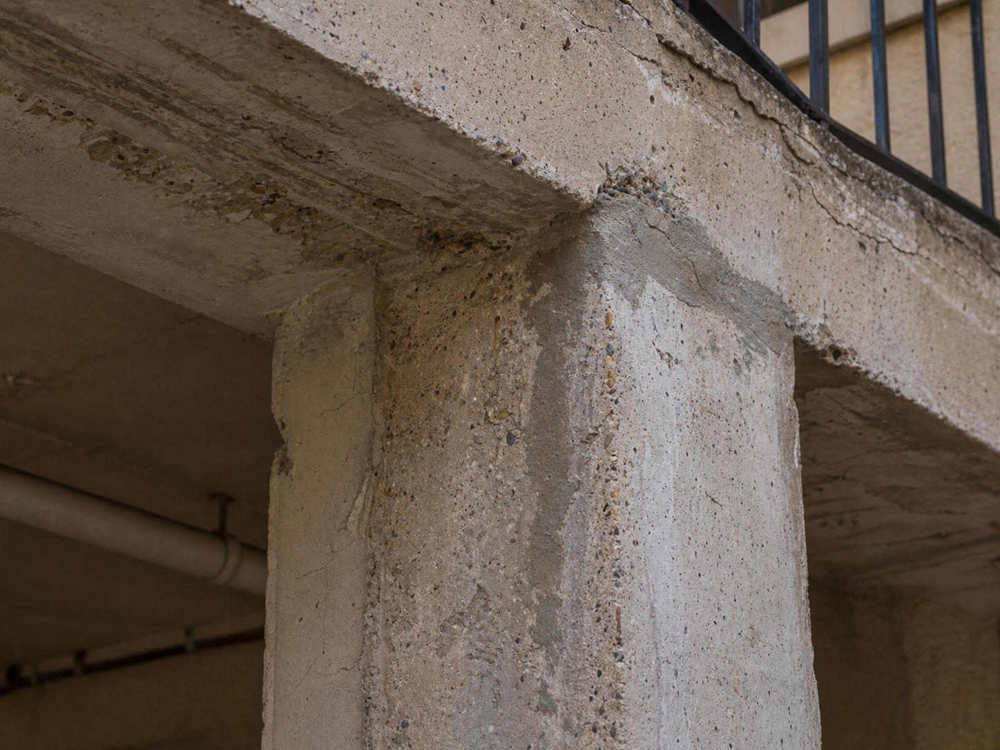
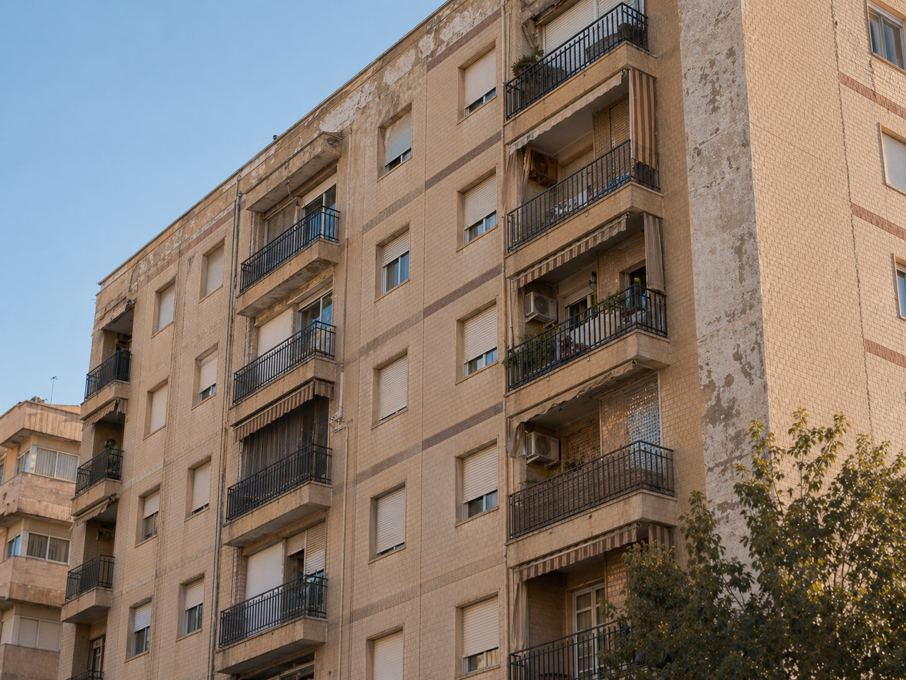

Arquitecto técnico colegiado · Elche · Alicante
Reviso, documento y adapto edificios y viviendas para que sigan siendo habitables, funcionales y seguros. Trato directo con el técnico que estudia el caso.
Práctica
No solo cuido edificios. Mantengo ordenado su expediente técnico a lo largo del tiempo. Mi trabajo es leer su estado, ordenar lo necesario y documentar cada intervención.
— Pedro Gonzálvez Abadía, arquitecto técnico colegiado.

Tres situaciones
No todos los encargos parten de la misma pregunta.
Patologías visibles, fisuras, humedades, deformaciones. Lo reviso, lo diagnostico y documento qué conviene hacer.
ITE, IEE, certificados, segunda ocupación. Identifico el trámite, preparo la documentación y la dejo lista para presentar.
Reformas, accesibilidad, ascensores. Valoro viabilidad, proyecto la intervención y dirijo la ejecución.
Servicios
Un informe técnico no es un trámite: es una lectura ordenada del estado del inmueble.
Pedir revisión técnica
Inspección del edificio para detectar incidencias, priorizar actuaciones y dejar constancia técnica del estado real.
Solicitar información
El edificio no necesita más papeles. Necesita el documento adecuado, firmado y útil.
Solicitar documentación
Contacto
Si el edificio da señales, falta documentación o toca intervenir, el primer paso es ordenar el caso. Respondo personalmente en menos de 48 horas.